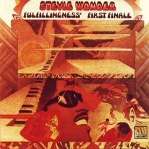
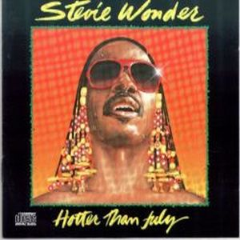
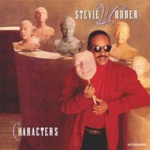
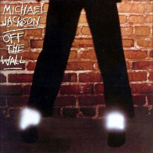
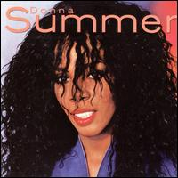
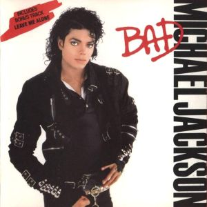
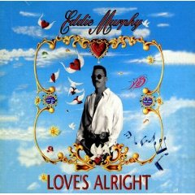

|  | 1974-Fulfillingness' First Finale
(coros en la canción You Haven't Done Nothin' con los Jackson 5) |
|  | 1980-Hotter Than July
(Coros en la canción All I Do) |
|  | 1987-Characters
(Dueto en la canción Get It) |
|  | 1979-Off The Wall
(Composición y teclados de Stevie en I Can't Help It en el álbum de Michael Jackson) |
| 1985-Usa For Africa
(colaboración humanitaria a través de la canción We Are The World) |
|
|  | 1982-Donna Summer
(Coros en la canción junto a más artistas en State Of Independence del álbum de Donna Summer) |
|  | 1987-Bad
(Dueto en la canción Just Good Friends del álbum de Michael Jackson) |
|  | 1993-Love's Alright
(Coros y armónica con más artistas en la canción Yeah del álbum de Eddie Murphy) |